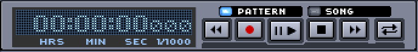
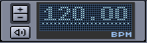

Resum
Hydrogen is a software synthesizer which can be used alone, emulating a drum machine based on patterns, or via an external MIDI keyboard/sequencer software. Hydrogen compiles on Linux, Mac OS X and Windows.
Sumari
- I. Introducció
- II. Usant Hydrogen
- III. Una nova cançó
- IV. Appendix
Llistat de figures
- 3.1. The General Tab
- 3.2. La pestanya del sistema d'àudio
- 3.3. La pestanya del sistema MIDI
- 3.4. The OSC Tab
- 3.5. La Pestanya d'Aparença
- 3.6. La Pestanya del Motor d'Àudio
- 6.1. The Main UI in Single Pane mode
- 6.2. The Main UI in Tabbed mode
- 8.1. La Barra d'Èines Principal
- 9.1. L'Editor de Cançons
- 9.2. The Pattern Options menu
- 9.3. Export a song
- 10.1. Pattern Editor in Drum mode
- 10.2. Pattern Editor Controls
- 10.3. Pattern Editor in Piano mode
- 11.1. El Mesclador
- 11.2. Select an Effect
- 12.1. Soundlibrary/Drumkit hierarchy
- 12.2. The Soundlibrary
- 12.3. Import Drumkit
- 13.1. The Instrument editor General view
- 13.2. The Instrument editor Layers view
- 13.3. The Sample Editor
- 17.1. L'Editor de Patrons
- 18.1. Inserting Patterns in the Song sequence
- 19.1. El Mesclador
Llistat de taules
- 15.1. OSC playback messages
- 15.2. OSC transport messages
- 15.3. OSC tempo and timeline messages
- 15.4. OSC mixer messages
- 15.5. OSC playlist messages
- 15.6. OSC general messages
- 15.7. OSC session management messages
- 20.1. Shortcut table
Sumari
You can download Hydrogen from http://www.hydrogen-music.org. On the 'Downloads' page you can find several binaries (installers) for Linux, Mac and Windows. (note that some versions may not be available for Windows and Mac)
If you want to compile Hydrogen yourself (see Capítol 2), you can download the latest source files directly from our git repository with:
$ git clone git://github.com/hydrogen-music/hydrogen.gitA certain release can be fetched with:
$ git checkout tags/1.0.0
Compiling Hydrogen depends on the following libraries (among others):
Qt 5 at http://www.qt.io
Libsndfile a http://www.mega-nerd.com/libsndfile/
ALSA (>= 1.x) at http://www.alsa-project.org (only if you wish to use ALSA as audio driver)
Kit de conexió Jack (>= 0.80) a http://jackaudio.org/ (només si vols utilitzar Jack com a controlador de sò)
PortAudio a http://www.portaudio.com (només si vols utilitzar PortAudio com a controlador de sò)
PulseAudio at http://www.pulseaudio.org (only if you wish to use PulseAudio as audio driver)
Flac a http://flac.sf.net (només si vols utilitzar patrons flac)
ladspa at http://www.ladspa.org (only if you wish to use ladspa effects)
liblrdf at http://sf.net/projects/lrdf (only if you wish to use lrdf to categorise effects)
lash a http://lash.nongnu.org (nomes si vols utilitzar lash)
Please install them with your distribution's package manager. If you're running a Debian-based system, you can install the libraries with:
$ apt-get install qtbase5-dev qtbase5-dev-tools \
qttools5-dev qttools5-dev-tools libqt5xmlpatterns5-dev \
libarchive-dev libsndfile1-dev libasound2-dev liblo-dev \
libpulse-dev libcppunit-dev liblrdf-dev \
liblash-compat-dev librubberband-dev libjack-jackd2-dev
Depending on the branch you are compiling you will need to use cmake. Check the INSTALL.txt and the README.txt files for more info (located in the top level dir once you downloaded the sources).
Compiling with cmake can be done easily by using the build.sh script. Go to the directory where the git repository was cloned and run the build.sh script without any arguments to display the help :
$ ./build.sh
The help is now displayed (and is self-explanatory) :
r[m] = > all built, temp and cache files c[lean] = > remove cache files m[ake] = > launch the build process d[oc] = > build html documentation g[raph] = > draw a dependencies graph h[elp] = > show the build options x|exec = > execute hydrogen t[ests] = > execute tests p[kg] = > build source package ex: ./build.sh r m pkg x
To build Hydrogen run the build script with the 'm' option :
$ ./build.sh m
Sumari
First of all you should make sure that the audio engine is configured properly. The preferences dialog can be accessed via the tools menu (tools -> preferences).
On the "General" tab (Figura 3.1) you can choose to automatically reopen the last used song and/or playlist. This can save you the trouble of having to reopen the song you are working on every time you open Hydrogen. Auto loading the playlist can come in handy when you are using Hydrogen live.
If you want to use Lash for session management you should enable it here so Hydrogen allows interaction with Lash.
The Beat Counter drift compensation and start offset allow you to compensate for system latency when you are using the Beat Counter function (see Tap Tempo and BeatCounter)
The Max number of bars in a song can be set here (currently limited to 800) and if you want to use rubberband for sample time-stretching (see Secció 5.2) you need to enter the path where rubberband is installed on you system here.

From the "Audio System" tab (Figura 3.2) it is possible to modify the audio driver being used (OSS, Jack, ALSA, PortAudio, PulseAudio, CoreAudio, Auto) with its buffer and sampling rate (unless you are using JACK, in this case the audio driver configuration should happen before starting the JACK server).
Also keep an eye on the value of "Polyphony": depending on your CPU you may want to change the max simultaneous notes in order to prevent hydrogen from overrunning the audio driver.
The "Interpolate resampling" parameter allows you to select your preferred interpolation method.
Els controladors disponibles són els següents:
Auto: Hydrogen will try a number of different drivers in a predetermined order, choose the first working one, and display the result. This option is recommended for beginners.
Jack: The Jack driver is a professional audio server which permits very low lag and exchanges with other audio software. We strongly recommend using this driver to have the best out of Hydrogen. JACK server will start automatically if not already running.
Available options:
Track output: This options determines which audio settings will be applied to the audio of the per-instrument output ports.
Post-Fader:
note velocity
note and instrument pan
layer, instrument, and component gain
instrument and main component volume
Pre-Fader:
note velocity
layer gain
BBT sync method: If Hydrogen uses Jack transport in the presence of an external Jack Timebase master (TBM), it will use the provided measure and tempo information instead of the local one of either the Song's tempo (see Capítol 8) or the markers added to the Timeline (see Secció 2). But due to limitations in the current implementation, Hydrogen can not set both measure and speed provided by Jack for arbitrary pattern combinations. The user has two options. Either drop all measure changes in the TBM and work with tempo changes only to support arbitrary patterns (using option constant measure) or to keep the length of each pattern consistent with the corresponding measure in the TBM and to use both tempo and measure provided by Jack (option matching bars).
For this option to take effect the J. TRAMS button has to be activated and the J. MASTER button deactivated (next to having a Jack TBM application). See Capítol 8.
Connect to Default Output Pair: Connects the main stereo output of the Mixer to the default ports of your system (system:playback_1 and system:playback_2) every time Hydrogen starts up or the audio driver is restarted.
Create per-instrument outputs: In addition to the main stereo output Hydrogen will register Jack output ports for every single instrument. This can be useful if you want to add effects to a single instrument with jack-rack for example.
Alsa: The widely adopted Linux standard audio drivers
OSS: The Oss audio driver uses /dev/dsp and it's based on the OSS interface which is supported by the vast majority of sound cards available for Linux; this said, the use of this audio driver blocks /dev/dsp until Hydrogen is closed i.e. unusable by any other software. Use it as last resort.
PortAudio: an open-source multi platform audio driver
CoreAudio: un controlador per a Mac OS X (experimental)
PulseAudio: a driver for the cross platform PulseAudio sound server.
The "Midi System" tab (Figura 3.3) contains all MIDI settings. Here you can choose the MIDI driver (ALSA, PortMidi, CoreMidi or JackMidi) input, and channel(s) that Hydrogen should respond to. You can also define midi bindings: link a midi note/message to an action. To do this simply press the red 'REC' button left of the event-action binding line. A popup will inform you that Hydrogen is waiting for your input. Press/hit/turn the key/pad/knob on your midi keyboard (or controller) that you want to link to this action. The popup will close and the Event Param value will now show the midi note value of the key you pressed. Once this is done you can select an Action from the action drop-down list. Note that some actions (like SELECT_NEXT_PATTERN) also require an Action Param that references the pattern you want to select with this midi action.
See Capítol 14 for more info on Midi actions.

The "OSC" tab (Figura 3.4) let's you modify all options associated with OSC (Open Sound Control) (see section OSC for details).
Enable OSC support: Allows Hydrogen to receive OSC commands send by external programs.
Enable OSC feedback: Hydrogen will broadcast OSC messages to all registered clients each time does change. A client can register to receive OSC messages by sending a message to Hydrogen previously. The state broadcast as feedback is composed of the following OSC paths:
/Hydrogen/MASTER_VOLUME_ABSOLUTE
/Hydrogen/TOGGLE_METRONOME
/Hydrogen/MUTE_TOGGLE
/Hydrogen/STRIP_VOLUME_ABSOLUTE/X
/Hydrogen/STRIP_VOLUME_RELATIVE/X
/Hydrogen/PAN_ABSOLUTE/X
/Hydrogen/STRIP_MUTE_TOGGLE/X
/Hydrogen/STRIP_SOLO_TOGGLE/X
Incoming port: Specifies the OSC port Hydrogen will be register to.
![[Nota]](note.png) | Nota |
|---|---|
If the chosen OSC port is already occupied, Hydrogen will pick an alternative one on startup and displays it via a popup as well as in the OSC tab of the Preferences. |
The "Appearance" tab (Figura 3.5) let's you modify Hydrogen look and feel (font settings and interface style). On this tab you can also change the VU meters fall-off speed and switch between Single pane and Tabbed interface mode (see Capítol 6)

The "Audio Engine" tab (Figura 3.6) is a window that shows various stats about Hydrogen and the audio driver. In case JACK is used, buffer and sampling rate should be set in the configuration of the JACK server before starting Hydrogen (JACK automatically starts when an application tries to connect).
Note that the Audio Engine tab is only available if Hydrogen was compiled with debug support.
Sumari
- 4. Tipus de fitxers utilitzats
- 5. Keyboard and Mouse
- 6. The main User Interface : an overview
- 7. Menú principal
- 8. La barra d'eines principal
- 9. Editor de Cançons
- 10. L'Editor de Patrons
- 11. Mesclador
- 12. Sound Library (Drumkit/Pattern/Song Manager)
- 13. Kits de Bateria i Editant Instruents
- 14. Midi
- 15. OSC
Abans de treballar amb Hydrogen, si us plau, familiaritza't amb els següents tipus de fitxers:
*.h2pattern: Fitxer XML que descriu un patró. Els patrons són un grup de polsacions gestionats per l'etidor de patrons.
*.h2song: Fitxer XML que descriu una cançó (o seqüencia). Les cançons són grups de patrons amb les seves propietats, i són gestionats amb l'editor de cançons
*.h2playlist: XML file describing a playlist. A Playlist is a (ordered) group of songs.
*.h2drumkit: es tracta d'una carpeta comprimida que conté totes les mostres de sò que composen un kit de bateria i un fitxer XML de descripció. Els kits de bateria són bàsicament un grup de mostres de sò.
The Hydrogen user interface is designed so that it can be used entirely with the mouse, with the exception of text entry.
The keyboard can also be used for navigating and editing in the pattern and song editors, using a combination of
Arrow keys: move the keyboard input cursor's position, or adjust values under the cursor.
Shift + Arrow keys: can be used to make selections of notes or pattern groups as if the mouse had been dragged over them.
Enter / Return: generally performs the same action as a mouse click, but can also start or end a move (or copy) of items in the same way a mouse drag would.
Tab / Shift + Tab: move between different areas of the main interface.
Delete: delete notes or patterns.
Escape: cancels an ongoing selection, move or copy.
Note that the keyboard input cursor is hidden from view until one of the above keys is pressed. This keeps the display clear and uncluttered when using the mouse.
Most other keys on the keyboard can be used to play samples and enter notes in the same way a MIDI keyboard can be.
The Main UI comes in 2 flavors : the (classic) Single Pane mode (ideal for large- and medium size screens), and the Tabbed mode (optimized for netbook screen sizes).
Below you can see the main UI split up in 5 parts : the Main Menu, Main Toolbar, Song Editor, Pattern Editor and the Instrument and Sound Library Editor. These sections will be explained in detail further down in this manual.


Projectes: aquest menú ofereix funcions relacionades amb els fitxers.
Nou - Crear una nova cançó
Mostrar informació - Configurar les propietats generals de la cançó com ara nom, autor, llicència i altres notes
Obre - Obre una cançó
Obre Demo - Obrir una cançó de demostració (les cançons de demostració es troben a INSTALLPATH/share/hydrogen/data/demo_songs)
Obre Recent - Obre un menú que mostra les cançons utilizades recentment
Desa - Desa les modificacions fetes a la cançó actual
Desa com a - Desa la cançó actual especificant-li un nom (directori per defecte: $HOME/.hydrogen/data/songs))
Obrir patró - Obre un patró desat que pertany al kit de bateria actual
Exportar patró com a - Desa el patró, serà desat a $HOME/.hydrogen/data/patterns/drumkit_name
Exportar fitxer MIDI - Exporta la cançó actual en format MIDI
Export song - Export current song in WAV format (see Export Song)
Export Lilypond file - This is a first version of the LilyPond export. It has the following limitations: Only GM-kit is supported, No triplets support
Sortir - Sortir d'Hydrogen
Undo: Undo/Redo functions.
Undo - Lets you undo your last action
Redo - Lets you redo the last undone action
Undo History - Gives you an overview of your previous actions
Instruments: this menu offers instruments functions.
Afegir instrument - Afegeix un nou instrument al kit de bateria actualment actiu
Neteja-ho tot - Elimina tots els instruments del kit de bateria actual
Add component: - A component is a part of Hydrogen's instrument model. Each instrument consists of one or more components, and each component consists of one or more layers.
To make an example: A snare could have two components. One component includes sounds from the top side of the snare drum, and the other component includes the sounds from the bottom side of the snare drum (where the snare wires are fitted). Each component can consist of several layers (snare drum hits with different velocities). Now you can adjust the volume of the two components to build your ideal drum sound. If you want more of the attack, you can put in more of the "top head" component. If you want more of the snare wires, you put in more of the bottom component.
Drumkits: this menu offers drumkit (sound libraries) functions.
Save - Saves all instruments settings (and their sound samples) in $HOME/.hydrogen/data/library_name
Export - Compress all instruments samples and settings in a drumkit in $HOME/.hydrogen/data/library_name
Import - Imports another drumkit from the local filesystem. To load another drumkit in your current working session of Hydrogen, read Instrument rack.
Online import - Imports another drumkit from a remote location through an XML feed. The XML file that should be provided is NOT RSS compliant (see Hydrogen website for an example). To load another drumkit in your current working session of Hydrogen, read Instrument rack.
View:Opens the director, the playlist editor, the instrument rack and the general preferences window.
Editor de llistes de reproducció - Una eina per a gestionar llistes de reproducció.
Director - Open the director window.
Mesclador - Obre la finestra del mesclador.
Banc d'Instruments - Obre el panell del banc d'instruments.
Automation path - Open the automation path panel.
Timeline - Open the time line panel (auto hiding the playback track)
Playback track - Open the time line panel (auto hiding the timeline)
Full screen - Maximises the window size to the whole screen area
Options: selects the input mode and opens the general preferences window.
Input mode - when set to Drumset the keys on your midi keyboard will map to the instruments in your drumkit. If you set it to Instrument the keys of your midi keyboard will trigger the instrument that is currently selected. The pitch of the instrument will follow the key you press on your keyboard. This feature is mainly used for non-drum instruments. An example: if you use a sample of a piano for one of your instruments, you will be able to 'play' that piano instrument using your keyboard just like you are playing a piano synth.
Preferences - Open the main preferences window. Read Preferences on how to configure Hydrogen.
Debug: tools mainly for debugging and monitoring Hydrogen (only available when compiled with debug support !).
Show audio engine info - Open a monitor with various stats
acció de depuració - Inserta una instrucció per a la depuració.
Imprimir Objectes - Imprimir a stdout (sortida per defecte) l'actual mapa d'objectes.
Informació
Manual d'usuari- Obre una finestra amb aquest manual
About - The usual window with license information, acknowledgments, etc.
Report bug - Opens the Hydrogen issue page at github.com in Internet browser You can open a new issue to communicate a bug here (first search if there exists already an issue about it)
Donate - Make a donation to developers/mantainers
Abans d'analitzar les dues àrees principals d'Hydrogen, fem primer una ullada ràpida a la barra d'eines principal i als seus components:
Pilota la cançó utilitzant els botons d'inici, aturar, pausa, etc.
Escull entre mode "patró" o "cançó": En mode "patró" només se sentirà el patró seleccionat, mentre que en el mode "cançó" se sentiràn tots els patrons utilitzats.
An advanced tap tempo function: choose note length and how many notes to wait before recalculating BPM, then hit the comma key repeatedly until the 'R' letter appears and then the BPM will be updated. (see Tap Tempo and BeatCounter)
Configurar manualment les PPM
Administrar el transport JACK
Obrir els panells del mesclador i del panell d'instruments


Main controls to start [Hotkey = Spacebar], stop, record, fast forward, rewind, loop a song or a pattern.

Set Pattern/Song Mode. When Song mode is selected Hydrogen will play the complete song. This is the sequence of patterns you have created in the Song Editor (see Capítol 9). When Pattern mode is selected Hydrogen will play the pattern that is currently selected, and thus displayed in the Pattern Editor (see Capítol 10).

Set measure type and Beat Counter (see Tap Tempo and BeatCounter).

Estableix velocitat de reproducció (rang: 30-400 PPM) [Hotkey = mouse wheel] i botó per habilitar/deshabilitar el metrònom

Shows CPU load and MIDI events. The CPU bargraph gives you an indication of the CPU load. The MIDI led lights up every time Hydrogen receives a midi message.

Click J. TRANS to enable Jack transport. If the J. MASTER button is pressed Hydrogen will work as Jack timebase 'master' by sending additional information, like the current speed, to other Jack clients. Else it will either act as 'slave' in the presence of another timebase master (e.g. Ardour) or as a stand-alone client in the absence of it. Please note that when acting as 'slave' Hydrogen will obey the tempo provided by the timebase master and instead of its own tempo markers (see Secció 2).

The last section gives you quick access to the Mixer window and the Instrument Rack. The LCD screen displays what Hydrogen is up to.
It is possible to change the tempo at any time using the Tap Tempo and BeatCounter features of Hydrogen. You can do this while the song is playing or while the song is stopped. To change the tempo, hit the , (comma) key in the tempo you want. After the correct number of keystrokes have been detected (see below for details), the tempo will change to the average tempo you tapped the comma key. If you continue to tap, these new taps will become a part of a rolling average. If you tap accidentally, or if you wait too long between taps, the tap tempo counter will start over.
The Tap Tempo is a part of the BeatCounter, which is essentially a Tap Tempo on steroids. By default the BeatCounter display is not visible. To see the BeatCounter widget click the upright button (BC) between Song/Pattern mode selector and the BPM-widget, or, simply press the comma key. (,).
The tempo that you tap will be considered even beats of the song's beat type. The beat type can be set to 1/8 (for eight-note beats), 1/4 (for quarter-note beats), 1/2 (for half-note beats), and 1/1 (for whole-note beats). To change the beat type use the left +/- buttons. To change the Countdown Counter value, use the right +/- buttons. The Countdown Counter value can be set between 2 and 16 beats. (I.e. if you set the beat to 6, you will have to tap 6 times before the new tempo is computed and set.) When the display shows an R, it means that the BeatCounter is ready to start from 0. When you tap the comma key, the R will change to 1, and will increment with every keystroke until it reaches the Countdown Counter value (shown just below the 'R').
El botó del fons a ma dreta controla la funcionalitat començar-automàticament, i s'activa entre S i P. P significa (Reproduïr), en aquest estat la cançó assignarà el tempo automàticament i es començarà a reproduïr quan hagis entrat la quantitat correcta de polsacions (si no s'està ja reproduïnt, clar). D'aquesta manera, si tens el ComptadorDePatrons configurat a 4/4, pots polsar 1-2-3-4, i començar en la pròxima polsació. Quan es mostra S (per Configura PPM), l'auto inici està deshabilitat.
Per exemple: suposem que estàs en un grup, Hydrogen, i tens un sintetitzador software controlat per Seq24)... i vols que tot comenci alhora. Configura el tipus de ritme a 1/4 i el nombre de polsacions a 4. Habilita l'auto-inici (mostrant P). Compta al grup 1-2-3-4 (mentre li vas donant a la coma) — i tothom comença a l'1.
Un altre exemple: En la mateixa situació, però la cançó no requereix d'Hydrogen o sintetitzadors fins a una estona després. Mentrestant, un humà (p.e. el guitarrista) anirà configurant el tempo. En la mesura anterior en la que hydrogen se suposa que ha de començar, polsa la coma 1-2-3-4 amb el ritme... i ja ho tens a la pròxima polsació (amb el tempo correcte).
Si estàs utilitzant el transport JACK, el ComptadorDePolsacions continua funcionant. Si algun altre programa és el Mestre del Transport JACK, Hydrogen respondrà als events de canvi de tempo des d'aquella aplicació. Fixa't que en aquesta situació, Hydrogen se suposa que ha de ser un esclau, pel que la funcionalitat del ComptadorDePatrons seràn desactivades o no funcionaràn correctament. Si Hydrogen és el mestre del transport JACK, els canvis a Hydrogen es veuràn reflectits en altres programes (si ho soporten).
Some of the settings to adjust the BeatCounter's latency compensation, are located on the General tab of the Preferences Dialog (see Secció 1 ). Here you will find two spinboxes:
Beat counter drift compensation in 1/10ms — adjust to compensate for latency between the keyboard and the program.
Beat counter start offset in ms — adjust the time between the BeatCounter's last input stroke and when the song starts playing (if auto-start is activated).
Fixa't que aquests valors poden estar configurats a positiu (+) o negatiu (-). Per tal de trobar valors útils per a aquests, necessitaràs jugar-hi un temps. Amés, pots voler utilitzar valors diferents depenent de la velocitat del teu maquinari, dispositius d'àudio, controladors, etc. Utilitzar el ComptadorDePolsacions bé necessita pràctica.
Sumari
The "Song Editor" (Figura 9.1) gives an overview of the whole timeline of the song (e.g. intro, verse, bridge, chorus and so on); each blue colored square on this panel represents a complete bar as shown in the underlying "Pattern Editor" panel. The song editor gives you complete freedom to add/remove patterns to the song and to move or copy any part of your song.


 Esborrar completament tots els patrons (demana confirmació!).
Esborrar completament tots els patrons (demana confirmació!).  Crear un nou patró (i demana pel seu nom).
Crear un nou patró (i demana pel seu nom).  Moure el patró seleccionat amunt o avall.
Moure el patró seleccionat amunt o avall.Note that you can also just drag-and-drop a pattern up/down in the pattern list.
 Enable Draw Mode. This mode allows you to create a song by drawing blocks on the song canvas.
Enable Draw Mode. This mode allows you to create a song by drawing blocks on the song canvas.Clicking a square on the song canvas will add a pattern (the square will turn blue), clicking it again will remove that pattern from the song.
Using the arrow keys on the keyboard, and the Return key, will also add and remove patterns from the song. The keyboard input cursor is usually hidden unless you press one of the arrow keys.
 Enable Select Mode. This mode allows you to select a part of the song and delete/move/copy it.
Enable Select Mode. This mode allows you to select a part of the song and delete/move/copy it.Once you have selected a part of your song you can delete it by pressing the Delete button. You can move it by simply dragging your selection to another location, and you can also copy your selection by Ctrl-dragging it to a new location.
Selections can be modified by Ctrl-clicking to select additional blocks, or to remove selected blocks from the selection.
The arrow keys on the keyboard can also be used, along with the Return key, to select, move and copy (Ctrl+Return) parts of the song.
Pressing Escape will cancel an editing operation that's in progress, or clear any selection.
 set Hydrogen to "Single pattern mode"
set Hydrogen to "Single pattern mode"  or to "Stacked pattern mode".
or to "Stacked pattern mode".For more info on this see the SELECT_NEXT_PATTERN midi action in Capítol 14.
This section describes how you can define tempo changes and how you can add tags to your song.
The majority of songs consist of several parts (intro, verse, chorus ...) and often these parts will have a different tempo. Hydrogen provides an easy way to let you change the tempo of a song at any given moment in the song. This is done by adding Tempo change Markers to your song.
To add a Tempo change marker to your song you first need to enable the 'BPM' option (the BPM button is located just above the Song editors main controls). Once this is done the horizontal bar next to the BPM button changes to a ruler with marks at every bar. Now simply left-click this ruler at the bar you want the tempo to change and a window will pop up where you can enter the new tempo. (Please note that the ruler will not be available while using the Jack transport in 'slave' mode.)

Once you have entered the new tempo and clicked OK, the tempo change will show up on the tempo ruler. If you click the Tempo marker again you can edit the tempo, change the bar or delete the tempo marker.

In addition to changing the tempo when the song switches from intro > verse, it is also very handy to have a clear indication of this tempo switch (or any other event in the song). For this purpose you can also add Tags markers to the song. These Tags are short text messages you can add to your song at any given moment that will be displayed whenever the song playhead passes by that Tag.
To add a Tag to your song simply middle-click on the song ruler (just below the tempo ruler) and a window will pop up where that allows you to add text for any bar.

Once you are done you will see a small blue 'T' in the song ruler for every tag you have entered. Middle-click anywhere on the song ruler to edit the tags.

Now all we need is a way to see the tags we have entered. This can be done using the Director window. Open the Director by pressing Alt-D, or Tools- Director :

The Director is your best friend when you need a quick overview of what Hydrogen is currently doing. This comes in very handy when you are recording a song, or if you are using Hydrogen live on stage.
The Director shows you the song name, a visual metronome and of course the song Tags. Just below the metronome you can see the latest tag, and below that the next upcoming tag. This way you have a nice overview of what is going on, and what is about to happen in the song.
This section describes how you can use a playback track to write drums for an existing track. This useful when you want to write a drumtrack to an already existing instrumental track, for example a guitar track.
To add a playback track to your song, you need to enable the playback track view. This can be done by pressing the small "P" button in the next to the vertical scroll bar of the song editor.
An alternative way to enable the playback track view is to enable the option "Playback track" in the "View" menu. If the playback track view is enabled, a visualisation of the currently loaded track is display above the song editor.
Left to the visualisation, the controls for the playback are displayed:
Edit: Load a new playback track
Mute: Mute the current playback track
Fader: Adjust the volume of the playback track
As an alternative to the use of the Edit Button, you can add a new playback track by drag'n'drop, just drag an audio file to the visualation area. When a playback track track is loaded, it will be played everytime Hydrogen is in "Play" mode and the song mode is activated.
Right-clicking the name of a pattern will show you a menu where you can change a number of things :

Edit : will open the selected pattern in the Pattern Editor.
Copy : will copy the selected pattern to a new pattern in your song.
Note that patterns with the same name are not allowed.
Delete : will completely remove the selected pattern from the song.
Fill/Clear : will open a window that allows you to fill/clear a part of the song with the selected pattern by entering the start- and end bar.
Properties : will open a window where you can change the name of the pattern and also assign it to a certain category.
Note that you can choose one of the existing categories from the dropdown list, but you can also enter a new category name in the Pattern Category box.
Load Pattern : will open the selected pattern in the Pattern Editor.
Save Pattern : will open the selected pattern in the Pattern Editor.
Virtual Pattern : will open the selected pattern in the Pattern Editor.
Virtual patterns are a convenient way of grouping patterns together. For example, say you have a song in which three patterns are always played together at the start of each bar. Previously, the way to do this in the pattern matrix was to explicitly enable the three patterns at each bar.
With virtual patterns we can assign a pattern to be a sort of meta-pattern that implicitly invokes these three patterns together when the new virtual pattern is enabled in the pattern matrix. This way, we only need to set one pattern every bar, instead of three.
Virtual patterns provide a function that's similar to the regular pattern editor, and one could argue that since a virtual pattern is also a regular pattern, we could have just merged the three patterns into this new one. However, the advantage that virtual patterns provide is that if one of the original three patterns changes, the virtual pattern automatically inherits the change. A virtual pattern can also invoke other virtual patterns.

Once your song is finished you can export it to an audio file. This audio file can then be played on your favorite media player or imported in an other audio application.
To do this, go to Project - "Export song" and the following window will pop up:
To export a song you need to do 3 things:
Enter a name and location for the export file in the 'Export filename' field
Select one of the available templates (e.g. CD, DAT ...) according to your needs: each template has a specific bitrate, resolution, and audio format (WAV, AIFF, FLAC or OGG). You can tweak the selected template using the samplerate/sampledepth dropdown boxes underneath the template field.
Export mode: 'Export to a single track' will export 1 stereo downmix of your song (= the master output). 'Export to separate tracks' will create files for each instrument/track. 'Both' will create a stereo downmix + audio files for all individual instruments.
Once all these settings have been configured all you need to do is click the 'Export' button and Hydrogen will generate the requested files.
| Nota |
|---|---|
If you have tempo changes in your song (see Secció 2) these tempo changes will not be exported. This is a know limitation of the current versions (including 0.9.6) As a workaround you can record the output of Hydrogen with an audio recording application (like Ardour, Qtractor ...) |
Sumari
The "Pattern Editor" allows you to create or modify the selected pattern by adding/removing notes and tuning a number of per-note properties like velocity and pan. The Pattern Editor can be used in 2 modes : 'Drum' mode or 'Piano' mode. You can switch between these modes by clicking the Drum/Piano button (located on the top-right of the Pattern Editor)
| Nota |
|---|---|
|
First let's take a look at the (classic) 'Drum' mode :
The top part of the pattern editor contains a number of controls :
From left to right :
SIZE: lets you choose the length of the pattern (in note values)
It will open a dialog to enter the new size as text, in the standard music fractional notation:
Type '/' to separate numerator and denominator.
If you enter just the numerator (e.g. "4"), the current denominator will be assumed.
You can enter a decimal numerator (e.g. "4.5/4") but since Hydrogen resolution is limited, some values are not supported and will be approximated.
Hydrogen supports (only) the following denominators: 1, 2, 3, 4, 6, 8, 12, 16, 24, 32, 48, 64, 96, 192, because these are the factors of the maximum resolution (192 ticks per whole note). You can use unsupported denominators, but the size will be approximated almost all the times, hence a warning icon will appear:
RES : this is the current grid resolution (4 through 64)
Remember this constraint concerning the grid: if you are working with a resolution of 16 you can't go back to 8 and remove an upbeat 16th note. On the other hand if you are working with a resolution of 8 and you try to insert a note in the middle of two bars (looking for a 16 bars precision), notes will be placed in the previous or in the following 8th bar. This constraint can be removed if you disable the whole grid resolution (choose "off" from the grid resolution LCD control). Now you'll be able to place notes wherever you prefer.
HEAR : when enabled Hydrogen will play the sample as it's being added to the pattern.
QUANT : enables/disables quantization. When enabled the beats inserted will automatically respect the grid resolution currently applied.
INPUT : switch Pattern Editor between Drum and Piano mode. (see below)

The section on the left shows you what drumkit is currently selected (GMkit by default) and below that you can see the instruments that are part of this kit.

Each instrument has its own set of features that are accessible by right-clicking the instrument. From the context menu that pops up you can select
Clear notes : to remove all notes for this instrument in this pattern.
Fill notes : this allows you to fill up the pattern with notes for the selected instrument. Depending on the choice you make (fill all, fill 1/2, fill 1/4 ...) notes will be placed at all, 1/2, 1/4, etc of the note positions that are allowed by the grid setting. So be careful not to mix up the 'musical' 1/2-note and the 'fill 1/2' note.
Randomize velocity : automatically apply a pseudo-random velocity to each note of that instrument in the pattern. The more velocity you set on the instrument, the more hydrogen will hit «hard» on that instrument when played.
Delete Instrument : well, deletes the instrument ;-)
The small red and green buttons right of the instrument names are the «mute» (red) and «solo» (green) buttons.
The order of the instruments can be rearranged by simply dragging an instrument up/down in the list and dropping it on a new position within the drumkit. Doing so will not change anything to the sequence you have created for that instrument, nor will it change anything to the song or pattern you are working on. It will however, have an impact on the MIDI note mapping : in the table below you can find the link between the instrument position, the MIDI note and the qwerty keyboard keys.
Important Notes :
The name of the instrument depends on the drumkit that is loaded. This list below refers to the GMkit that is loaded by default.
Try to follow the GM midi standard as accurately as possible. This will ensure that switching between drumkits goes smoothly. You are of course free to place your instruments anywhere in your drumkit, and sometimes it isn't even possible to follow the GM standard, but it makes life a lot easier if you do.
Keep in mind that it is the position of the instrument (within the loaded drumkit) that is linked to a MIDI-note/keyboard-key and not the name of the instrument.

Here's a quick reference of the above bindings for your convenience.

This is where it all happens, this is where you can make music :-)
In this area you can see your selected pattern and add notes for any instrument. The simplest way to create a pattern is by adding notes using your mouse (and the 'Fill/Clear notes' function described above). Where you can add notes depends on the used pattern size and resolution.
If you are using Hydrogen as a pure 'drum' you just want Hydrogen to 'hit' the instrument wherever there's a 'dot' in the pattern. If you are using Hydrogen as an 'instrument', the length of the note becomes very important. There are 2 ways to define the length of a note :
you can add a note by left-clicking, and then can 'stretch' that note by right-click-dragging it. This will change the dot into a rectangle that represents the duration of that note.
Alternatively, you can add a stop-note by Shift+left-clicking. This adds a blue dot which represents the end of the note.

(Figure above, from left >right : a 'normal' note, a note in 'note length' mode, a note in 'note off' mode)
As in the Song Editor, the arrow keys can also be used to move around the pattern, and notes can be placed or removed with Return.
Notes can be selected by dragging over them with the mouse (or Shift+arrow keys), and can be deleted with 'Delete', or moved by dragging (or Return followed by arrow key movements) the notes to a new location. This allows notes to be moved between different instruments, or to adjust their timing. Movement in the horizontal direction is constrained by the currently selected grid resolution, however this can be overridden by holding down Alt while moving notes.
Moving a selection of notes with Ctrl held down will copy them to the new location rather than moving, as in the Song Editor.
Selected notes can also be copied to the clipboard with Ctrl+C, and pasted with Ctrl+V. When pasting, the relative positions of the input cursor at the time of the Copy and Paste operation will set the new position of pasted notes.
So far we have only used the mouse or keyboard editing to create a pattern, but you can also record your beats by clicking the Record button  (see Capítol 7) and simply playing your pattern on your MIDI drum or your pc keyboard (see instrument mapping above). This is probably a more musical way of creating a pattern, but it's up to you to decide what works best for you. (Also see Part III for a basic walk-through of how the pattern editor works)
(see Capítol 7) and simply playing your pattern on your MIDI drum or your pc keyboard (see instrument mapping above). This is probably a more musical way of creating a pattern, but it's up to you to decide what works best for you. (Also see Part III for a basic walk-through of how the pattern editor works)
Clicking on an instrument or adding/removing a note next to it will select this instrument. Once an instrument is selected the note properties for this instrument will be shown in the form of vertical lines in the bottom window. The lines represent the value for the selected property of each note of the selected instrument. You can select a different note-property from the note property drop-down list (located bottom-left). There are 4 note properties available :
Velocity : how hard the note is played (the volume of the note)
Note that the color of the note-dot and the vertical bar will change according to the velocity value you have defined. A light shade of gray means a low velocity (low volume) and the higher you set the velocity the darker the color will be, turning red when you reach the point of clipping.
Pan : with this parameter you can move the stereo image position of the note (how loud it will be in the left/right output).
Note that the effect of note Pan depends on the instrument Pan knob, which is set in the mixer. Look to next figure to see how the Resultant Pan is determined (from version 1.1):
This multi-pan model resembles a "matryoshka" in some way: the note Pan value moves the Resultant Pan in a smaller pan range centered at instrument Pan, whose extension depends on instrument Pan value. Some examples: if instrument Pan is central, note Pan moves the signal in the whole stereo range (really from Left to Right); if instrument Pan is sided, note Pan moves the signal in a progressively smaller stereo range centered at instrument Pan; if instrument Pan is HARD-sided, note Pan doesn't have any effect.
Lead/Lag : Lead and Lag allows a slight note lead or lag in respect of the actual beat. The range is ca. 5 ticks (ca. 1/10 of quarter notes) which equals around ca. 10 ms at a tempo of 120bpm. Changing the lead/lag can make a huge difference to the way your pattern sounds and feels. It's a groove thing ;-)
Notekey : if you select this note parameter the area where you can modify the parameter will change into a 'piano keyboard'
The striped black and white area represents a piano keyboard and in the gray area you can choose the octave. By moving the dots on the octave scale and the 'keyboard', you can choose any note value.
(Note that the pattern editor in piano roll mode (see Secció 5) can also be used to change the note value of existing notes)
Probability : changing the Probability property of a note provides a way for Hydrogen to automatically create some variation in patterns. By setting the probability to less than 1.0, a note may be randomly skipped: a note with probability 1.0 will always be played, a note with probability of 0.0 will never be played.


Clicking or dragging the value lines in the note properties editor will set the property value. But often you'll want to set the properties of several notes at once, so there are a few ways to do this.
Drawing with the mouse:
Pressing the mouse button over the first note's property, you can hold down the mouse button and drag over multiple notes. This is great for quickly creating a crescendo from a filled set of notes.
Selecting multiple notes:
The mouse or keyboard can be used to select multiple notes, which can then be modified all together by dragging them together. This can be useful for creating really consistent quiet grace notes.
Drum mode (see Figura 10.1) focuses on using Hydrogen as a drum machine. If you are using Hydrogen as an instrument there is a big chance that the Piano mode is for you. It gives you a complete 'piano keyboard' so you can easily put down your tunes.
You can compare the Piano mode to the Note properties Notekey (described above), only here you have a complete piano keyboard, so you don't have to select the octave first.
The Mixer window can be opened by pressing Alt+M, by clicking Mixer in the Tools menu, or by clicking the Mixer button on the main toolbar.
The Mixer consists of 3 sections (left >right) : the instrument channel strips, the FX plugin rack and the master fader section. The Hydrogen Mixer works very much like a hardware mixer does : it lets you set the volume, pan, FX and several other things for every instrument.
From top to bottom : the 2 top elements on the strip are a 'play' button / 'trig' led combination. (  ) The play button lets you trigger the instrument at maximum velocity (handy for checking clipping), and the trig led lights up whenever this instrument is triggered (from the song sequence, or by an external midi controller). Right of this button/led you will find another led that shows you what instrument is currently selected. This is also the instrument that is selected in the pattern editor. As soon as you change one of the settings of a channel strip the instrument will be selected.
) The play button lets you trigger the instrument at maximum velocity (handy for checking clipping), and the trig led lights up whenever this instrument is triggered (from the song sequence, or by an external midi controller). Right of this button/led you will find another led that shows you what instrument is currently selected. This is also the instrument that is selected in the pattern editor. As soon as you change one of the settings of a channel strip the instrument will be selected.
Just below you can find the Mute  and Solo
and Solo  buttons and the Pan(orama) knob. Note that the Mute and Solo states are also reflected in the Song editor.
buttons and the Pan(orama) knob. Note that the Mute and Solo states are also reflected in the Song editor.
Next are 4 pre-fader FX send knobs that determine how much of this instrument will be sent to the effect plugins in the FX rack.

Just below that you can find an LCD peak-value display, and finally the volume fader and VU meter for that instrument.
IMPORTANT NOTE : keep in mind that the volume and pan settings that you find on the Mixer are global settings. The per-note velocity and pan settings in the Pattern editor are settings that are relative to the settings in the Mixer window !
The FX rack has 4 bays where you can load a LADSPA effect plugin, but before you can load any plugins these must be installed (surprised ? ;-)
There are dozens of plugins available for download from various sources :
SWH-Plugins available at http://plugin.org.uk.
(Note : if you want to compile these plugins you need the FFTW tarball from http://www.fftw.org)
CMT disponible a http://www.ladspa.org.
TAP disponible a http://tap-plugins.sf.net.
Calf plugins http://calf.sourceforge.net/.
....
![[Avís]](warning.png) | Matar Plugins |
|---|---|
A badly designed LADSPA plugin is capable of hanging, crashing, freezing, screeching, overflowing buffers, and even phoning home. If you start having issues with Hydrogen, disable your plugins and see if things improve. Some plugins are not designed for real-time use, and some are just plain better than others. |
Once you have installed some plugins you can select one by clicking the  button. (if you do not see the FX rack, make sure that the
button. (if you do not see the FX rack, make sure that the  button (in the Master section) is enabled)
button (in the Master section) is enabled)
Now the FX selector window will pop up :

Once you have selected a plugin you will immediately have access to its parameters:

You can select another plugin by clicking the 'Select FX' button. If you quickly want to enable/disable the effect click the 'Deactivate' button (or the Bypass (  ) button in the FX rack). This can be handy for a quick A/B comparison.
) button in the FX rack). This can be handy for a quick A/B comparison.
After you have selected the FX and tweaked it's parameters you can use the FX return knob to increase/decrease how much of this FX will be returned to the master output.
The Master section contains the Master volume fader with VU meters and three global Humanize settings for Velocity, Timing and Swing (in order to add a 'human feel' to the song):
Velocity : adds a certain randomness to the note velocity. The higher you turn this knob, the more the velocity will be randomized.
Timing : adds a certain randomness to the note timing (lead/lag). The higher you turn this knob, the more the timing will be randomized.
Nota Notes are displaced in time (using Gaussian perturbation) but the pattern durations or bpm do not change.
Swing : this knob will add a certain amount of swing to the song.
Nota Swing (a slight time delay) is applied to upbeat 16th-notes, and not to 8th-notes as it happens in traditional Jazz.
Note that Hydrogen can also be switched to 'per instrument output' mode (see Secció 2), and in this mode all channel strip outputs will be available in Jack (not just the Master output). This allows you to route the individual instruments directly into any other Jack enabled application (eg Ardour) and gives you a lot more flexibility.
On the bottom-right of the Master section the 'FX' button will show/hide the FX rack, and the 'Peak' button  will enable/disable the VU meters.
will enable/disable the VU meters.
| Nota |
|---|---|
The VU meter fall off speed can be configured in the preferences window (see Secció 5) |
In the upper part of Master section there is a small "cog" icon button:
Click it to open the Mixer Settings window:
Here you can select the Pan Law used by Hydrogen Mixer.
The Pan Law is the relationship between the pan knob and the separate gains of Left and Right outputs. The aim is to control the horizontal angle the sound seems to arrive from.
Hydrogen features one the most customizable and accurate Pan Law set.
You will find four categories: linear, polar, ratio, quadratic. Every category gives a different "scale" or "sensibility" to the pan knob: the same knob position will make the sound appear more lateral or central depending on the category, from the most lateral (linear) to the most central (quadratic).
Then for each category you will find four options, that define a constraint between the gains of the two channels:
Balance Law (0dB): when you turn the pan knob from center to right, the right gain stays constant at maximum level while the left gain decreases from the maximum level to 0 (and symmetrically turning from center to left).
It is ideal for balancing a DUAL-channel track. It has ZERO center compensation: the sound will be louder when the pan knob is at center - unless channels are out of phase - so you may have to readjust the volume manually with the mixer fader.
Constant Power (-3dB): the total power (which is proportional to the square of the gain) is constant for any position of the pan knob.
Compared to the Balance Law, each channel gain is divided by the square root of 2 when the pan knob is at center (-3.0103 dB center compensation). In a common room, this constraint may give the general perception of uniform volume for any pan knob position (panning a MONO track).
Constant Sum (-6dB): the sum of left and right gains is constant for any position of the pan knob.
This constraint preserves the mix volumes in mono export. Compared to the Balance Law, each channel gain is halved (-6.0206 dB) when the pan knob is at center. If you are in an ideal anechoic room (where there are no acoustic reflections) and you seat perfectly at the same distance from the speakers, with this constraint the volume will be really constant for any pan position, because of the linear super-position of sound waves (panning a MONO track).
Constant k-Norm (Custom dB center compensation): you can experiment adjusting the center compensation to your taste!
Note that some hi-end studio mixers - to be used in well tuned rooms - have center compensation between -3dB and -6dB.
The four constraints should not change the perception of the stereo angle, but the volume only (depending on the pan knob).
The Pan Law is something you should choose before starting the mix and keep untouched. Hydrogen sets the ratio Balance Law by default because it was the only available law until version 1.0 (so old songs and drumkits will sound the same). The setting is saved in the songfile but not in preferences, so it is NOT remembered when you create a new song.
| Nota |
|---|---|
Unlike in advanced mixers, Hydrogen panning makes no distinction if a track is mono or dual-channel (stereo). You cannot pan each channel of stereo tracks separately, nor use a balance law for them and another pan law for mono tracks. If the drumkit you are using is made of true stereo samples, you don't want a negative center compensation probably, so you should select a Balance Law. |
Sumari
First of all a little history on the Sound library and Drumkits. Hydrogen began as a dedicated drum machine but has evolved into a versatile sound synthesizer/sequencer that is capable of generating and manipulating all sorts of sounds. Hence the original "Drumkit" terminology is slightly misleading. You can load any kind of sound into a "Drumkit" and manipulate that sound just like playing a regular synthesizer. This is also the main reason why the Piano mode was added to the pattern editor (see Secció 5).
In this manual (and in other documentation) "Drumkit" and "Soundlibrary" frequently mean the same thing, but not always. The diagram below shows the actual relation between the Soundlibrary and Drumkits:

As you can see the Soundlibrary contains all Drumkits (System and User drumkits), your saved Patterns and your saved Songs. Each Drumkit is a collection of a number of instruments (snare, kick, sampled voice, bass sound ...) and in its turn an instrument can consist of multiple layered samples. Note that every block has a number of parameters (continue reading for more details).
This said. let's take a look at the Soundlibrary interface and see what it can do for you:
The Sound Library saves you time in managing your drum kits, favourite patterns, and favourite songs. When making new songs and new drum kits, it allows you to reuse and mix the instruments and patterns from other kits and songs.

This lists the drumkits that were installed by your system administrator. The location of these System Drumkits is determined by the compile-time prefix. On Unix-like operating systems, this is usually /usr/share/hydrogen/data/drumkits, or possibly /usr/local/share/hydrogen/data/drumkits. These kits are available to all users on the system, and users are usually not able to add to them.
Per a carregar un kit de bateria des d'aqui, clica amb el botó dret al kit de bateria i selecciona . Això canviarà el kit de bateria actual amb el que hagis seleccionat. Per carregar un sol instrument del kit, clica amb el botò esquerre cap a l'esquerra del nom del kit de bateria per mostrar tots els instruments. Amb el botó esquerre del ratolí, clica i arrossega l'instrument al kit actual. L'instrument serà afegit al kit de bateria que hagis carregat.
Aquests són els kits de bateria que tu mateix pots gestionar. Normalment es guarden a $HOME/.hydrogen/data/drumkits. Quan crees un nou kit de bateria, pots desar-lo aqui seleccionant → .
You can import existing drumkits from other users via → . The Import window will pop up with the Internet tab selected. By default the link to the drumkit list (on hydrogen-music.org) will be filled in, and after pressing the 'Update list' button you will get a complete list of all drumkits that are available for download. In the status column you can see if a kit is installed or not.
If you select one of the drumkits you will see info about this kit in the right pane of the Import window: name, description, author and also the license type.
| Avís |
|---|---|
If you are using Hydrogen for commercial purposes, (creating songs and selling these on-line or in any other way) you need to pay special attention to the license type of the drumkit(s) you are using. If the exact license is not available for a drumkit, do _NOT_ assume that it is a CC (or other open and free license type). Even if the kit is CC licensed you should always check with the author before using the kit in your songs. DISCLAIMER : hydrogen is not responsible for the drumkits that are made available for download by our users, either via the hydrogen-music.org site or via any other channel. |
You can install a drumkit by selecting it and clicking 'Download and Install'.

Once the kit has been downloaded it will be available in the Sound Library under "User drumkits".
To save songs in the Sound Library, put them in your data directory underneath the songs folder (usually $HOME/.hydrogen/data/songs). To remove them, remove the file from that folder.
Before you save a pattern to the sound library, be sure to give it a title and a category. Right-click on the pattern, select "" and enter the details. You can use one of the categories already provided, or create your own categories by simply typing in a category name. The category name is important, because the patterns will be filed by category in the Sound Library.
You can add a pattern to the sound library by right clicking the title of the pattern in the song editor, and selecting "". It will now appear in the Sound Library underneath "Patterns" and the category that you assigned to the pattern.
Sumari
The synthesizer in Hydrogen is a sample-based synthesizer. A sample is a piece of pre-recorded audio (usually between 0.1 sec and 3 sec). To play a note, the sample is simply played back at the right time. There are a few concepts and terms that you should understand when you are putting together a drumkit. (See Glossari for more detailed explanations.)
Termes de Mostreig del Sintetitzador
- Sample
A short recording of a sound, typically between 0.1 and 3.0 seconds long.
- Gain
Ajust de volum.
- Velocity
La força amb la que toques la nota.
- Generador d'contorns ADSR
An Attack/Decay/Sustain/Release envelope generator. After you trigger a note, Hydrogen will attack the note by increasing its volume from 0 to the full velocity of the note. After reaching full velocity, it will decay the note by lowering the volume until it reaches the sustain level. When the note is released, Hydrogen reduces the volume from the sustain level back down to 0. See ADSR Envelope for more info
- Attack
La quantitat de temps per anar de 0 a velocitat màxima.
- Decay
La quantitat de temps per passar de velocitat màxima a volum de sustain.
- Sustain
El nivell (com d'alt) que aguanta el volum de la nota entre el sustain i el release. És un tant per cent de la velocitat. No depèn del temps.
- Release
La quantitat de remps per passar del volum de sustain a 0
Les típiques mostres que utilitza Hydrogen son: el sò d'un tambor de la bateria, el sò d'un plat, el sò d'una esquella. Quan poses una nota en el patró (o toques una nota utilitzant MIDI), Hydrogen reprodueix qualsevol sò que hi hagi carregat. Per tant, per ajuntar un kit de bateria necessites recopilar grabacions curtes del bombo, cada tambor, cada plat, el charles obert i tancat, la caixa (oberta o tancada), tocs al canto de la caixa, etc.
De totes maneres, no hi ha regles en quant a què pot ser una mostra. No es extrany utilitzar Hydrogen per disparar sons que no son de bateria: clips d'àucio de gent xerrant, un tros d'una cançó, efectes de sò, clips d'àudio de pelicul.les, gent famosa parlant... Siques creatiu!
In the next paragraphs we will show you how to create a complete drumkit. Keeping in mind the 'Soundlibrary hierarchy' (see Figura 12.1) we will use a top-down approach, so we will start at the Drumkit level and work our way down to the samples.
Creating a new drumkit with Hydrogen is done with the Instrument Editor. You can load samples, set envelope parameters, set the gain, and other advanced features like mute groups, a low-pass resonance filter, and pitch randomization.
TIP : Instead of creating your own drumkit, you can also use or download existing drumkits using the Instrument rack.
Lets make a brand new drum kit :
select → . This will give you a bank of 32 blank instruments. To delete instruments, right-click on on each instrument and select "". To add more instruments, select → .
Selecciona un instrument per començar a editar-lo. Això es fa clicant amb el botó esquerre al nom de l'instrument a la llista d'instruments (a l'esquerra). T'adonaràs que el nom de l'instrument a l'Editor d'Instruments és igual al que has clicat.
Once you have your drum kit working the way you want, select → . You will be prompted for the name of the kit to save. If you wish to overwrite an existing kit, you will need to type in the same name as the kit that you want to replace.
Drumkits are automatically stored in the
datadirectory (i.e.$HOME/.hydrogen/data/drumkits).To export a drumkit (for sharing with others), it must first be loaded into your Sound Library. Then, select → from the menu. Select the drum kit that you wish to export, and give it a file name to save it to.
In the instrument editor, click on the button. Here you can adjust several parameters that apply to the instrument (applies to all layers as well).
The parameters are:
Paràmetres d'contorn: , , , . (See Generador de Contorns)
: El volum general de l'instrument.
: Treu el volum del grup del que aquest instrument és membre (veure Enmudir Grup).
Paràmetres de filtre: ass, , .
Pitch Shift Parameters: , ,
: Group and Range.
It's important that you understand Secció 1 in order to continue on.
Quan l'instrument és disparat, el seu volum passa per un contorn ADSR. Els seus paràmetres són els següents:
Attack — the amount of time that the volume of the sample goes from 0 to the full velocity of the note. If the value is 0, the sample will play immediately at full velocity. If the value is 1.0, the sample volume will use the maximum time available for the attack parameter. [1]
Decay — the amount of time for the volume of the sample to go from full velocity down to the sustain volume. If the value is 0, the sample will immediately skip from the attack volume to the sustain volume. If the value is 1.0, the sample volume will use the maximum time available for the decay parameter.[1]
Sustain — the volume to play the note after the decay phase is over, and until the note is released. If set to 0, the note will be silent. If set to 1.0, the note will play at full velocity.
Release — the time to fade out the note from the sustain volume back down to 0 (silent). If set to 0, the note will fade out in the minimum amount of time (about 5 ms). If set to 1, it will fade out for the maximum time available.[1]
Si la mostra és més curta que els temps especificats, la mostra acabarà, sigui quina sigui la fase de l'ADSR en que es trobi. Si la nota està en sustain, no dibuixa la nota mentre l'estàs aguantant. Només aguanta el paràmetre guany (volum) durant aquest temps.
El guany configura el volum general de la mostra. Aquest guany és aplicat després del guany aplicat a nivell de capa, i abans del guany seleccionat per al mesclador. Si el Guany és 0, l'instrument no se sentirà. Si el guany és 1.0, el volum de les mostres no serà ajustat (p.e. 0 dB). Si el guany és major, les mostres seràn amplificades.
| Avís |
|---|---|
És molt fàcil posar el massa alt, provocant que la mostra es saturi. Recorda provar el guany a velocitat màxima. Si satures la senyal aqui, serà pitjor quan Hydrogen ho processi. |
Hydrogen proporciona més grups per a enmudir dels que sabràs què fer-hi (cap a 256). Un grup per enmudir és una agrupació d'instruments que són mutualment exclusius — només un instrument pot estar-se tocant en un determinat moment. Si un s'està tocant i un altre instrument d'aquest grup és disparat, serà inmediatament silenciat (mut) i començarà a tocar-se l'altre instrument. És útil, sobretot per a instruments com ara el charles en els que el sò obert i el sò tancat són instruments diferents.
If the mute group is set to "Off", then the instrument is not part of any mute grouping. If the mute group is set to any number, then that is the group that the instrument is a part of. To set other instruments into the same grouping, set their mute group parameter to the same number. (For example, to group all the high-hat instruments, you can set all their mute group parameters to 1. To have a snare drum mute group, set their mute group parameters to 2.)
If this box is checked Hydrogen will immediately stop any playing sample that belongs to this instrument whenever the instrument is re-triggered.
This option is particularly useful when you are using long samples like a crash or some existing audio that you have sampled (like a looped voice in a dance/electro song) For the crash you will need to use the Auto Stop-Note when you are sequencing multiple notes in fast succession and want to make it sound realistic. If you do not check this option the cymbal will start to sound like multiple cymbals instead of only one (since the sample of each individual hit will be played completely). For the voice sample this option is useful if you are trying to get that 'stuttering' effect.
This lets the user decide if Hydrogen will apply the note velocity to the sample being played.
When activated, Hydrogen will apply the note velocity to the sample gain in addition to the layer gain, the instrument gain, the component gain or the instrument volume. If all the layer samples are normalized, this option should be used. By default this option will be selected as this is the way older version of Hydrogen used to work.
When not activated, the note velocity will only be used to select the sample to be played, but the sample gain will not be changed. This is useful for set of samples that already have their gain "hard-coded".
El filtre és un filtre passa-baixos ressonant. Si no vols fer-lo servir, clica ass per a que es posi el botó vermell. Si no està vermell, el filtre està actiu. El paràmetre cutoff ajusta la freqüència de tall pel filtre. El paràmetre de ressonància ajusta com ressonarà la freqüència de tall. Si la ressonància està a 0, el filtre és un simple passa-baixos.
| Nota |
|---|---|
La freqüència de tall del filtre varia amb la freqüència de mostreig de la teva tarja de sò. El rang del botó (de 0 a 1.0) està optimitzat per a una freqüència de mostreig de 48.000 kHz. |
The first two knobs control the pitch shift offset. You can use it to change the tuning of the instrument. "Pitch" is the Coarse control and has quantized steps of half-tones from -24 to +24. "Fine" is the Fine control and has quantized steps of cents of half-tones from -0.50 to +0.50.
The "random" parameter allows you to randomly vary the pitch of the sample every time it is triggered. The value is set between 0 and 1.0. The pitch change is fairly small, almost always between ±1 half-steps × value. Using this sparingly can help your sequences to sound more like a real drummer.
Hydrogen is capable of generating midi messages that you can use to trigger any external midi device or application. To do this you simply need to configure the Midi out channel and Note for every instrument. You need to have a sample loaded (an empty WAV file is fine) and make sure the proper Midi routing/wiring is in place and you're set. As you can see this is a very flexible approach that enables you to trigger samples or sounds from multiple devices and/or apps.
From now on every time a note is played for that instrument (in the Hydrogen sequencer) a midi message will be sent to your external app/device and trigger a sound. This way you can use Hydrogen as a pure sequencer for other apps, or combine the internal Hydrogen sampler with multiple external apps/devices.
The Hi-Hat is a particular instrument of the drumkit as its sound can be changed by pressing the foot pedal.
For e-drummer owner, the hihat pressure group enables to group different hihat instruments together, for example closed, half closed, fully open.
Pressure Group: you can assign more instruments to the same group. You can create many groups: for example one group for the different opening levels of a hihat when playing the top of it, another group when playing the edge. Another example: timpanis - create a group for each timpani and the pressure will change the note.
Range: set the minimum and maximum pressure for each instrument. Each instrument of a given group should seat in its own separate pressure range. The range will decide at what pressure level the instrument will be played. For example, if your closed hi-hat has range from 0 to 20, when the hi-hat pedal is pressed between 0 and 20 the closed hi-hat is played.
Pots carregar vàries mostres i configurar diferents paràmetres de sintetitzador per a cada instrument d'un kit de bateria. Aquesta secció et guiarà en com crear un nou instrument i carregar les mostres.
To begin creating an instrument, select → . This will give you a blank instrument to start from.
Ara necessites dues mostres. Qualsevol fitxer .WAV o .FLAC servirà. Hydrogen en proporviona vàries al directori data/drumkits.
A l'editor d'instruments, clica a . Pots posar vàries mostres com a capes per a l'instrument. Quina és tocada depèn de la velocitat de la nota entrant. Clica i apunta al per a carregar la teva mostra. Fixa't que el et permetrà pre-escoltar la mostra abans de carregar-la. També et permet carregar més d'una mostra a cada moment. Però de moment només en carregarem una.
Una vegada carregada la mostra, veuràs que ara hi ha un 1 a dalt, i que el rectangle s'ha tornat blau cel. Per carregar una segona mostra, clica la posició just a sota, llavors clica per posar-hi una nova mostra.
Després de portar en ambdues mostres, segurament t'adonaràs que només la primera mostra es toca quan dispares l'instrument. Això és per que has de configurar els rangs de velocitat en les capes. Mou el ratolí per les bandes dels rectangles blau cel i veuràs que tens un cursor per a arrossegar d'esquerra a dreta. Ara arrossega la mostra cap a l'esquerra o la dreta (com una cortina). Veuràs la segona capa aparèixer.
The velocity setting for the layer is 0-velocity on the left, and full velocity on the right. Set up Layer 1 to sound for soft notes, and Layer 2 to sound for hard notes (i.e. Layer 1 on the left and Layer 2 on the right).
Now, in the pattern area, set up a simple pattern that plays this instrument. Adjust the velocity settings on each note so that you can get the different samples to sound. Now set the pattern to loop and notice how your different samples are getting triggered. (To learn about editing a pattern, see Capítol 10)
Per cada capa, pots configurar el i el . El tò també té un botó d'ajustament .
Ajusta el per controlar el volum de reproducció de la mostra. És necessari ja que és extremament dificil conseguir un conjunt de mostres que sonin exactament al mateix volum. Ajustant-ho aqui, les mostres que s'han enregistrat massa fluixes es poden amplificar per a que sonin igual que les mostres més altes (que segurament s'han hagut d'atenuar).
| Avís |
|---|---|
És molt fàcil posar el massa alt, provocant que la mostra es saturi. Recorda provar el guany a velocitat màxima. Si satures la senyal aqui, serà pitjor quan Hydrogen ho processi. |
El tò de la mostra pot ser modificat amb els controls de tò. El controlador de ajusta el tò en migs tons misicals. (Per tant, -12 és una octava). El tò a la dreta ajusta el tò ±50 Centèssimes. (Mig tò són 100 centèssimes)
| Nota |
|---|---|
The pitch is adjusted by playing the sample back faster or slower. This is called the Doppler Effect. So, if you have a 1-second sample that you turn down -12 (1 octave), your sample will only last for 0.5-seconds. If you do not want this to happen you should use rubberband instead (see Secció 5.2) |
You can hear the sample in a layer by clicking the layer id (just below the 'General' and 'Layers' buttons) and the 'Delete Layer' button will delete the currently selected layer.
Certain set of samples contain different sample versions of the same sound for the same note/velocity in order to make it more natural - drummers for example never hit the drum set twice the same way. This functionality is making Hydrogen compatible with this type of sample collection.
To use this functionality, you need to first a few samples that share the same velocity range in Hydrogen. The second step is to select how Hydrogen will chose the sample when a note within a certain velocity is played.
First in Velocity — will select the first sample available in the velocity set. This is the way previous versions of Hydrogen were working.
Round Robin — will cycle through the different samples one after another as note in the same velocity range is played.
Random — will select a random sample inside the velocity range for each note played.
So far we have created a multilayered Drumkit, set a number of instrument parameters, played with velocity settings and so on. Now it's time to go one step deeper and edit the samples using one of the newest Hydrogen features: the Sample Editor.
The Sample Editor allows you to tweak and manipulate your samples. This is a function that will really speed up the creation of a drumkit since you can do the fine-tuning of the sample within Hydrogen. In pre-0.9.5 builds the typical workflow would be to prepare your sample in an external sound editor, import the sample in Hydrogen, test it, go back to the audio editor, import again, test ... The sample editor allows you to do most of the sample manipulation within Hydrogen. This mean less switching between Hydrogen and your audio editor and more time to make music !
| Nota |
|---|---|
The changes you make to your samples in the Sample Editor are non-destructive and are saved per song. So the original sample will not be changed, and you can reuse the same sample in multiple songs with different Sample Editor settings. |

The Sample Editor consists of 3 sections (as indicated in the figure above):
In this section you can set the start, stop and loop points for the sample by dragging the the 3 markers:
S-marker (green) : indicates the Start-point (in-point) of the sample.
E-marker (red) : indicates the End-point (out-point) of the sample.
L-marker (blue) : determines the loop-in point of your sample
You can easily move one of the markers by grabbing them close to the letter that marks them. Whenever you grab one of the markers you will see a detail view of the position of that marker on the second (smaller) window on the right, making it easy to find the zero-crossings in the sample. This detail window also has a slider next to it that allows you to zoom in and out on the vertical axis. Think of it as a sort of volume 'zoom'.
Underneath these 2 windows you can find (from left >right) : the position of the Start marker, the position of the Loop marker, the Loop mode, the number of loops and the position of the End marker. The position of the markers is expressed in number of samples from the very beginning of the sample. These values will change if you drag the markers, but you can also fine-tune the marker position by using the up/down arrows of the spinboxes, the up/down keys on your keyboard, or by using your mouse scroll wheel while hovering above the spinboxes.
Apart from the marker positions there are 2 settings that apply to the Sample Editor's loop function: loop mode and loop number. With the loop function you can repeat the part of your sample that is in between the Loop- and the End-marker. The way it is looped is determined by the Loop mode (forward, reverse or ping-pong) and the number of times it is looped is determined by the Loop number.
If you want to hear a preview of the tweaking you have done so far, you first need to press the 'Apply Changes' button (@ the bottom of section 3) and then the Play button to hear the result.
This section of the Sample Editor allows you to control the Rubberband settings. Rubberband is a tool that can change the tempo of a sample without changing the sample's pitch (and vice versa).
If you are using Ubuntu you can install rubberband from the Software Center (rubberband-cli). For other linux distros check your package manager. For other platforms please check the rubberband site . After installing rubberband you should check if the path to the rubberband cli is configured correctly (see Secció 1).
If rubberband is installed correctly you will have access to the rubberband settings, and an extra button named 'RUB' will be available in the Main Toolbar, right of the BPM LCD display:

Back to the rubberband settings :
Sample length to beat : when set to 'off', rubberband functionality is disabled. Normally this parameter should be set to the length of the part of the sample between the Start and End marker, expressed in number of beats.
Pitch : this setting allows you to change the pitch of the sample, expressed in semitones,cent.
Crispness : this setting does not affect tempo or pitch, but changes the way the sample sounds.
Note: If you want Hydrogen to recalculate the sample length on the fly (using rubberband) you must enable the 'RUB' button (see figure above).
In the bottom section of the Sample Editor you can see the end result of the tweaks you have made by pressing the Apply Changes button. You can also change the the Volume and Panorama (Pan) of your sample here. This is done by creating 'envelopes' like the ones you find in numerous DAW's for automation. To edit an envelope you first need to select 'Volume' or 'Panorama'in the upper right corner of section 3. The Volume envelope is blue, and the pan envelope is yellow. Left clicking in the bottom window will ad a node to an envelope and also allows you to drag an existing node. Right-clicking a node will delete it. Don't forget to Apply Changes before you play your tweaked sample.
With all of the different parameters available to tweak, it can be difficult to set up something that sounds nice when you're done. Here are a few tips on setting up an instrument:
Turn down the gain. Every gain knob (i.e. an amplifier), this is a gain stage. With every gain stage you have, it's easy to overdrive your signal — which means the signal gets distorted by clipping. In addition, if you have two samples that, by themselves, peg your meters — what do you think happens when you combine them? That's right, you overdrive the signal again.
Si les coses sonen malament i distorsionades, comença baixant el guany a la capa... especialment si és major a 1.0. Llavors passa a baixar el guany de l'instrument, Llavors qualsevol guany en els efectes LADSPA. Llavors a l'atenuador del mesclador. Llavors a l'atenuador del volum de sortida principal.
Prova les mostres a velocitat màxima. La teva mostra serà tocada més fort si la velocitat és més alta. Per tant, si ho configures tot per a que soni bé a velocitat màxima 0.7, què passarà quan tinguis una velocitat màxima d'1.0? (Pista: retall...)
Intenta utilitzar mostres de com a màxim -6 dB Visualment, això vol dir que les mostres arribaràn com a màxim a mitja escala. D'una altra manera, canvia el guany de la capa aproximadament a .5.
Remove all DC offsets from the sample. In a sample editor, there is usually a line down the center of your sample's waveform. This is the zero-line. The beginning of your sample should be on this line. The end of your sample should also be on this line. However, if your signal is a little above or a little below this line, you will hear a click at the beginning and the end of your sample whenever it is played. If your sample editor doesn't provide any tools to fix a DC offset problem, you can eliminate the noise by putting a slight fade-in/out at the ends of your sample.
L'ADSR no ha de ser més llarg que la teva mostra. Si tens una mostra curta, no importa quant posis a l'atac i decay — la mostra acabarà igual.
Things change with the sample rate. If you have a really nice setup with all your parameters painstakingly tweaked... things will change if you change the sample rate of your audio card. Many of Hydrogen's internal settings and parameters are based on how many samples go by, not on how many seconds go by. The sorts of things that change are: anything time-base (like attack and release) and anything frequency based (like the cutoff frequency).
[1] Els paràmetres d'atac, decay i release es configuren tots a partir del nombre de mostres d'àudio. Això significa que el temps canvia segons la freqüència de mostreig de la teva tarja de sò. El màxim de temps és 100.000 mostres d'àucio (típicament, 2,27 segons a 44.1 kHz).
In this section you can find more info about defining MIDI actions and how they can be useful for you. Before you can work with midi actions you should have your Midi devices, drivers and connections configured correctly (see Secció 3).
Lets take a look at the available options :

An Event is an incoming Midi message, coming from a MIDI controller or an external sequencer.
If you look at the Events list you will see that there are 3 types of Events available (as described in the Midi standard):
NOTE: input coming from a regular black/white key of a keyboard or a drumpad
CC: controller commands coming from faders or rotary controllers
MMC_x: machine control events coming from play/stop... buttons on a controller
The Param. (parameter) value to the right of the Event is the identifier of the note/button/controller that is linked to this Action. This parameter can be entered manually, or automatically by using the Midi learn function (see Secció 3).
| Nota |
|---|---|
You can also activate the Midi learn function by Shift-clicking most of the gui elements. A 'Waiting for Midi input...' popup informs you that Hydrogen is now waiting for you to press a key or turn/move a controller. If you Shift-click on a gui element that does not support Midi automation a popup will inform you. |
Next is a list of the available Actions: an Action describes what Hydrogen should do when a specific Midi Event is detected.
| Nota |
|---|---|
** Some of the Midi Actions require that the Action Parameter is configured. The Parameter usually references a specific channel, instrument, FXsend... Keep in mind that the Parameter value is zero-based. So if you want to reference channel 1 you have to enter '0' in the Parameter field (1 for channel 2, 2 for channel 3 ...) |
STOP : stops playback and moves the playhead to the beginning of the song
PLAY/PAUSE_TOGGLE : Works the same as PLAY if the playback has not started yet and same as. PAUSE otherwise. (The playhead will not return to the start of the song, but will stay at its current position)
PLAY/STOP_TOGGLE : works the same as PLAY if the playback has not started yet and same as. STOP otherwise.
MUTE : mutes the Master output in the Mixer (sequencer keeps running).
UNMUTE : unmutes the Master output in the Mixer (sequencer keeps running).
MUTE_TOGGLE : toggles the muting of the Master output in the Mixer (sequencer keeps running)
NEXT_BAR : moves the playhead to the next pattern/bar.
PREVIOUS_BAR : moves the playhead to the previous pattern/bar.
BPM_INCR : increases the current tempo by the supplied value. Note that this command will have no effect if Hydrogen is both in Song Mode and Tempo Marker has been passed
BPM_DECR : decreases the current tempo by the supplied value. Note that this command will have no effect if Hydrogen is both in Song Mode and Tempo Marker has been passed
BPM_CC_RELATIVE : changes the tempo relative to the current tempo, using a controller
MASTER_VOLUME_RELATIVE : changes the Master output volume, relative to the current setting. For a value of 0 it sets the volume of the master fader to 0. For a value of one 1 it increases its volume by 0.05 and for all other values it decreases it by 0.05. (-1: -0.05 , 0: 0 , 1: +0.05)
MASTER_VOLUME_ABSOLUTE : sets the volume of the master fader to the absolute value of the midi control (use with midi fader or pot)
STRIP_VOLUME_RELATIVE : see MASTER_VOLUME_RELATIVE, but applies to the channel strip defined in the Action Parameter **
STRIP_VOLUME_ABSOLUTE : see MASTER_VOLUME_ABSOLUTE, but applies to the channel strip defined in the Action Parameter **
EFFECTx_LEVEL_RELATIVE : changes the volume level of effect 'x'; the value you enter in the Action Parameter determines the channel strip this action applies to **
SELECT_NEXT_PATTERN : if Hydrogen is in Pattern Mode, switches to pattern that is defined in the Action Parameter **. If Hydrogen is in Song Mode, the command will have no effect
SELECT_AND_PLAY_NEXT_PATTERN : works as SELECT_NEXT_PATTERN combined with PLAY
PAN_RELATIVE : changes the pan, relative to the current value. For a value of 1 it increase the pan by 0.05. For all other values it decreases it by 0.05. (-1: -0.05 , 1: +0.05); the value you enter in the Action Parameter determines the channel strip this action applies to **
PAN_ABSOLUTE : changes the pan to the absolute value that the linked controller sends to Hydrogen
BEATCOUNTER : calculates the average time passing between successive encounters of this commands and uses it to set the current tempo. (see Tap Tempo and BeatCounter)
TAP_TEMPO : another command calculating the average time passing between successive encounters of this commands and uses it to set the current tempo (see Tap Tempo and BeatCounter)
SELECT_INSTRUMENT : selects a specific instrument in the drumkit
Sumari
Open Sound Control (OSC) is a protocol for communication among programs, computers, and hardware, like synthesizers or multimedia devices, via networking protocols such as UDP or TCP. It can be thought of as a replacement for the MIDI protocol with rich benefits, like supporting symbolic and high-resolution numerical argument data, providing an URL-style naming scheme in combination with a pattern matching language, and allowing to bundle messages for a better handling of timing and simultaneous processing.
Hydrogen is able to receive and send OSC messages. This allows you to control it using various devices, like hardware OSC controllers, smartphones, tablets, or any PC. For Linux-based systems you can use or test these interactions using the command line program oscsend.
oscsend localhost 9000 /Hydrogen/NEW_SONG s /tmp/new.h2song
To enable OSC support in Hydrogen, open the Preferences dialog (TODO link) and switch to the OSC tab. Make sure that the "Enable OSC support" checkbox is activated, otherwise Hydrogen will not listen for incoming OSC messages. Hydrogen's port number, which defaults to 9000, can be found in there as well.
The syntax for sending the commands is
oscsend localhost OSC_PORT_NUMBER COMMAND_URL COMMAND_TYPE COMMAND_ARGUMENT
with the supported types
' ' - no argument required
i - int32
f - float32
s - OSC-string (ASCII)
Detailed description of the formats and conventions used in the tables below
ff - Two types placed right after each other indicated that the command requires two distinct arguments.
' ',[f] - Two types separated by a comma indicate that two versions of the command are available. To support TouchOSC all commands expecting no parameter are available in an alternative version requiring a float too. In the latter version the argument will be ignored and it is placed in squared brackets [f] to indicate its inferiority compared to the non-parametric version.
[0,] - Limitations in possible values of the input parameters are indicated in the range column. For continuous values squared brackets [LOWER_LIMIT,UPPER_LIMIT] are used and a limit will be left empty when it is associated with a "natural" boundary, like the total number of instrument or pattern.
{-1;0;1} - Sets of discrete values are shown in curly brackets and separated semicolon {VALUE;...} and usually feature the most convenient input options.
1.0 - Also in order to support TouchOSC all numerical input has to be passed as type float while most of these numbers will be rounded to integers internally. For all true float inputs the range column uses a floating point representation of the limits, like 1.0 instead of 1.
X - All commands ending with a /X/ require this character to be replaced by an integer and do affect only the corresponding instrument, e.g. oscsend localhost 9000 /Hydrogen/PAN_ABSOLUTE/1/ f 0.3. The instrument number starts at 1 and is determined by the order of the instrument in the mixer and pattern editor.
Taula 15.1. OSC playback messages
| URL | type | range | description |
|---|---|---|---|
| /Hydrogen/PLAY/ | ' ',[f] | Starts playback. | |
| /Hydrogen/PAUSE/ | ' ',[f] | Stops playback. | |
| /Hydrogen/STOP/ | ' ',[f] | Stops playback and moves the playhead to the beginning of the song. | |
| /Hydrogen/PLAY_PAUSE_TOGGLE/ | ' ',[f] | Works the same as /Hydrogen/PLAY/ if the playback has not started yet and same as. /Hydrogen/PAUSE/ otherwise. (The playhead will not return to the start of the song, but will stay at its current position). | |
| /Hydrogen/PLAY_STOP_TOGGLE/ | ' ',[f] | Works the same as /Hydrogen/PLAY/ if the playback has not started yet and same as. /Hydrogen/STOP/ otherwise. | |
| /Hydrogen/RECORD_READY/ | ' ',[f] | Toggles recording (same as pressing the record button in the main toolbar) if the playback has not started yet. | |
| /Hydrogen/RECORD_STROBE_TOGGLE/ | ' ',[f] | Toggles recording (same as pressing the record button in the main toolbar). | |
| /Hydrogen/RECORD_STROBE/ | ' ',[f] | Activates recording. | |
| /Hydrogen/RECORD_EXIT/ | ' ',[f] | Deactivates recording. |
Taula 15.2. OSC transport messages
| URL | type | range | description |
|---|---|---|---|
| /Hydrogen/NEXT_BAR/ | ' ',[f] | Moves the playhead to the next pattern/bar. | |
| /Hydrogen/PREVIOUS_BAR/ | ' ',[f] | Moves the playhead to the previous pattern/bar. | |
| /Hydrogen/SELECT_NEXT_PATTERN/ | f | [0,] | If Hydrogen is in Pattern Mode, switch to pattern f. If Hydrogen is in Song Mode, the command will have no effect. |
| /Hydrogen/SELECT_AND_PLAY_NEXT_PATTERN/ | f | [0,] | Works as /Hydrogen/SELECT_NEXT_PATTERN/ combined with /Hydrogen/PLAY/. |
| /Hydrogen/RELOCATE/ | f | [0,] | If Hydrogen is in Song Mode, locates the playhead to pattern number f. If Hydrogen is in Pattern Mode, locates the playhead to the beginning of the current pattern. |
Taula 15.3. OSC tempo and timeline messages
| URL | type | range | description |
|---|---|---|---|
| /Hydrogen/BPM_DECR/ | f | Decreases the current tempo by f. Note that this command will have no effect if Hydrogen is both in Song Mode and Tempo Marker has been passed. | |
| /Hydrogen/BPM_INCR/ | f | Increases the current tempo by f. Note that this command will have no effect if Hydrogen is both in Song Mode and Tempo Marker has been passed. | |
| /Hydrogen/BEATCOUNTER/ | ' ',[f] | Calculates the average time passing between successive encounters of this commands and uses it to set the current tempo (see Tap Tempo and BeatCounter). | |
| /Hydrogen/TAP_TEMPO/ | ' ',[f] | Another command calculating the average time passing between successive encounters of this commands and uses it to set the current tempo (see Tap Tempo and BeatCounter). | |
| /Hydrogen/TIMELINE_ACTIVATION/ | f | {0,1} | Activates the Timeline if f is not zero and deactivates it otherwise. |
| /Hydrogen/TIMELINE_ADD_MARKER/ | ff | [0,] [10,400] | Adds a Tempo Marker to the Timeline. The first argument specifies the pattern/bar to at the marker to and the second its tempo. |
| /Hydrogen/TIMELINE_DELETE_MARKER/ | f | [0,] | Deletes a Tempo Marker at pattern/bar f on the Timeline. |
Taula 15.4. OSC mixer messages
| URL | type | range | description |
|---|---|---|---|
| /Hydrogen/MUTE/ | ' ',[f] | Mutes the Master output in the Mixer (sequencer keeps running). | |
| /Hydrogen/UNMUTE/ | ' ',[f] | Unmutes the Master output in the Mixer (sequencer keeps running). | |
| /Hydrogen/MUTE_TOGGLE/ | ' ',[f] | Toggles the muting of the Master output in the Mixer (sequencer keeps running). | |
| /Hydrogen/MASTER_VOLUME_ABSOLUTE/ | f | [0.0,1.5] | Sets the volume of the master fader. |
| /Hydrogen/MASTER_VOLUME_RELATIVE/ | f | {-1;0;1} | Changes the Master output volume, relative to the current setting. For a value of 0 it sets the volume of the master fader to 0. For a value of one 1 it increases its volume by 0.05 and for all other values it decreases it by 0.05. (-1: -0.05 , 0: 0 , 1: +0.05) |
| /Hydrogen/STRIP_VOLUME_ABSOLUTE/X/ | f | [0.0,1.5] | See /Hydrogen/MASTER_VOLUME_ABSOLUTE/, but applies to the channel strip provided in the OSC command path as X. Please not that this only affects instrument strips (those with pan and FX knobs). Strip volume control for instrument component strips is not implemented yet). |
| /Hydrogen/STRIP_VOLUME_RELATIVE/X/ | f | {-1;0;1} | See /Hydrogen/MASTER_VOLUME_RELATIVE/, but applies to the channel strip provided in the OSC command path as X. Please not that this only affects instrument strips (those with pan and FX knobs). Strip volume control for instrument component strips is not implemented yet). |
| /Hydrogen/PAN_ABSOLUTE/X/ | f | [0.0,1.0] | Sets the pan of instrument strip X. |
| /Hydrogen/PAN_RELATIVE/X/ | f | {-1;1} | Changes the pan of the instrument strip X, relative to the current value. For a value of 1 it increase the pan by 0.05. For all other values it decreases it by 0.05. (-1: -0.05 , 1: +0.05) |
| /Hydrogen/FILTER_CUTOFF_LEVEL_ABSOLUTE/X/ | f | [0,127] | For a value of 0 it sets the filter cutoff of the instrument strip X to 0. For all other values it sets the cutoff to the provided number divided by 127.0. Please note that this parameter is not displayed anywhere in the Mixer but in the Instrument Rack. |
| /Hydrogen/STRIP_MUTE_TOGGLE/X/ | f | Toggles muting of instrument strip X. Input argument will be ignored. | |
| /Hydrogen/STRIP_SOLO_TOGGLE/X/ | f | Toggles soloing of instrument strip X. Input argument will be ignored. |
Taula 15.5. OSC playlist messages
| URL | type | range | description |
|---|---|---|---|
| /Hydrogen/PLAYLIST_SONG/ | f | [0,] | Opens song f of the Playlist. |
| /Hydrogen/PLAYLIST_NEXT_SONG/ | ' ',[f] | Opens the next song in the Playlist. | |
| /Hydrogen/PLAYLIST_PREV_SONG/ | ' ',[f] | Opens the previous song in the Playlist. |
Taula 15.6. OSC general messages
| URL | type | range | description |
|---|---|---|---|
| /Hydrogen/UNDO_ACTION/ | ' ',[f] | Undoes the previous action. | |
| /Hydrogen/REDO_ACTION/ | ' ',[f] | Redoes the previous undone action. | |
| /Hydrogen/JACK_TRANSPORT_ACTIVATION/ | i | {0;1} | Deactivated the JACK transport support for a value of 0 and activates it for all others. |
| /Hydrogen/JACK_TIMEBASE_MASTER_ACTIVATION/ | i | {0;1} | Deactivated the JACK Timebase Master transport support for a value of 0 and activates it for all others. |
| /Hydrogen/SONG_MODE_ACTIVATION/ | i | {0;1} | Deactivated Song Mode for a value of 0 and activates it for all others. |
| /Hydrogen/LOOP_MODE_ACTIVATION/ | i | {0;1} | Deactivated Loop Mode for a value of 0 and activates it for all others. |
| /Hydrogen/TOGGLE_METRONOME/ | ' ',[f] | Toggles the metronome. | |
| /Hydrogen/SELECT_INSTRUMENT/ | f | [0,] | Selects a specific instrument in the drumkit. |
Taula 15.7. OSC session management messages
| URL | type | range | description |
|---|---|---|---|
| /Hydrogen/NEW_SONG/ | s | Creates an empty song which will be stored at the absolute path s. | |
| /Hydrogen/OPEN_SONG/ | s | Opens an existing song associated with the absolute path s. | |
| /Hydrogen/SAVE_SONG/ | "" | Saves the current song. | |
| /Hydrogen/SAVE_SONG_AS/ | s | Saves the current song to the absolute path s. | |
| /Hydrogen/SAVE_PREFERENCES/ | "" | Saves the preferences. | |
| /Hydrogen/QUIT/ | "" | Exits Hydrogen. |
This section is a quick-and-dirty walkthrough to Hydrogen. Refer to the tutorial for a more detailed overview.
Hydrogen has 2 main modes: "Pattern" mode and "Song" mode (refer to Capítol 8 for the buttons that activate each mode). When "Pattern" mode is activated the current pattern is continuously repeated. This mode is very well suited to tweak your pattern until it's just right, since the pattern you are working on is constantly repeated. This way you can immediately hear the changes you have made. In "Song" mode the whole song is played. This is useful when putting together the patterns to create the structure of the song.
We'll start from the empty song with an empty pattern created when Hydrogen starts up: "pattern" mode should be selected by default. Now let's click on the «Play»button, and while the pattern is playing let's add notes by left_mouse_clicking in the grid of the Song Editor (Figura 17.1). Adjust the grid resolution and BPM speed if needed. Remember some constraints of the grid: if you are working with a resolution of 16 you can't go back to 8 and remove a 16th note; same thing happens if you are working with a resolution of 8 and you try to insert a note in the middle of two bars (looking for a 16 bars precision): they will be placed on the previous or on the following 8th bar (unless you choose «off» from the Grid Resolution LCD in which case you're free to place notes wherever you prefer). Be sure to select the correct pattern in the Song Editor before adding notes in the Pattern Editor!

Once patterns are created (Figura 18.1), we can copy/paste/delete them using the Select Mode (see Secció 1).
Per descomptat sempre es pot utililtzar la finestra del mesclador, tant mentre estem creant els patrons com quan s'estan reproduïnt.
The Mixer frame (Figura 19.1) is made of 32 independent tracks, each of these is bound to an instrument, plus a "Master Output" control and a "FX" button to show and hide the effects panel. Every line features 3 buttons ( ), pan adjust (  ), current maximum peak, volume fader and name of the track. Clicking on will play the selected instrument, cutting the others. The "Mute" button , simply mute that instrument. The maximum peak indicates the maximum volume reached from the instrument. The peak must be in a range of 0.0 and 1.0 (in Figura 19.1 you can see a few volumes too loud). Peaks outside that range will get distorted (especially with OSS audio driver). Keep an eye on each vu-meter and if distortion appears, turn the volume down for that instrument.
), current maximum peak, volume fader and name of the track. Clicking on will play the selected instrument, cutting the others. The "Mute" button , simply mute that instrument. The maximum peak indicates the maximum volume reached from the instrument. The peak must be in a range of 0.0 and 1.0 (in Figura 19.1 you can see a few volumes too loud). Peaks outside that range will get distorted (especially with OSS audio driver). Keep an eye on each vu-meter and if distortion appears, turn the volume down for that instrument.
Taula 20.1. Shortcut table
| shortcut | description |
|---|---|
| [CTRL] + [N] | New Project |
| [CTRL] + [O] | Open File |
| [CTRL] + [D] | Open Demo |
| [CTRL] + [S] | Save Song |
| [CTRL] + [SHIFT] + [S] | Save Song as |
| [CTRL] + [P] | Export Pattern as |
| [CTRL] + [M] | Export MIDI file |
| [CTRL] + [E] | Export Song (see Export Song) |
| [CTRL] + [L] | Export LilyPond file |
| [CTRL] + [Q] | Quit Hydrogen |
| [CTRL] + [Z] | Undo an action |
| [CTRL] + [SHIFT] + [Z] | Redo an action |
| [ALT] + [D] | Show Director (see Director) |
| [ALT] + [M] | Show Mixer (see Mixer) |
| [ALT] + [I] | Show Instrument rack (see Instrument rack) |
| [ALT] + [A] | Show Automation path |
| [ALT] + [F] | Toggle fullscreen mode |
| [CTRL] + [ALT] + [I] | Set Input mode to Instrument |
| [CTRL] + [ALT] + [D] | Set Input mode to Drumkit |
| [ALT] + [P] | Show Preferences (see Preferences) |
| [ALT] + [?] | Show Manual |
| [Backspace] | Restart song or pattern from the beginning |
| [Space] | Play / Pause |
| [CTRL] + [Space] | Play / Pause at the current cursor position |
| [,] | Use Beatcounter (see Tap Tempo and BeatCounter) |
| [\] | Use Tap Tempo (see Tap Tempo and BeatCounter) |
| [+] | Increase tempo by 0.1 BPM |
| [-] | Decrease tempo by 0.1 BPM |
| [F5] | Jump to previous song in playlist |
| [F6] | Jump to next song in playlist |
| [F9] | Jump to previous bar in the song |
| [F10] | Jump to next bar in the song |
| [F12] | Panic button (stops the song and mutes all playing sounds) |
This is a glossary of general terms encountered when using Hydrogen, synthesizers, drums, or samplers. The definitions here provide more detail and explanation than the simplified ones in the text. For example, the text of the manual would have you believe that an ADSR is the only kind of envelope generator and could only ever control the volume. While the simplified definitions help new users start using Hydrogen quickly, they can lack the nuances presented here.
- ADSR
Un tipus de generador d'contorns que et permet controlar l'Arac, Decay, Sustain, i Release. Generalment, els paràmetres són propircionals a la velocitat.
A Hydrogen, el generador d'contorns ADSR només control el volum (atenuació).
Llegeix més sobre el tema a l'article de la Wikipedia ADSR Envelope
Veure també Generador de Contorns, Attack, Decay, Sustain, Release.
- Attack
Aquesta és la primera fase d'un contorn ADSR, i és la quantitat de temps per actirav el paràmetre des de 0 a velocitat màxima un cop disparada la nota.
Veure també ADSR.
- Atenuació
En filtres i mescladors, la quantitat en que és reduïda una senyal (volum).
Veure també Roll-off.
- Filtre passa-bandes
A filter that preserves a certain band of frequencies, and attenuates (silences) all others. This is often done by combining a high-pass and a low-pass filter.
Veure també Filtre, Filtre Passa Alts, Filtre Passa Baixos.
- Retall
Un fenòmen que li passa a una senyal quan aquesta és massa gran per al receptor. El pic de la senyal (que normalment es una corva suau) és tallat al volum màxim (tall). Això distorsiona el sò i acostuma a ser indesitjable.
Un exemple de retall és quan toques música més alt del que el teu altaveu pot suportar. Parts de la música sonen distorsionats.
- Freqüència de tall
Als filtres passa-alts i passa-baixos, és la freqüència que divideix les freqüències que passen i les que son atenuades (silenciades). En un filtre ressonant passa alts, o en un filtre passa-baixos ressonant, la freqüència de tall és també la zona de freqüència que és amplificada.
Per exemple, si tens un filtre passa-baixos i configures la freqüència de tall alta (p.e. 20kHz)... el filtre no afectarà al sò. Totes les freqüències audibles passaràn sense modificació. Si baixes la freqüència de tall cap a 40 Hz (la corda gruixuda d'un baix), sona com algú tapant un altaveu. Les freqüències més altes atenuades estàn per sobre 30 Hz.
Veure també Filtre, Filtre Passa Alts, Filtre Passa Baixos, Filtre de ressonància.
- Decay
Un cop assolida la velocitat màxima de l'atac, és la quantitat de temps per baixar de nivell de màxima velocitat a nivell de sustain.
Veure també ADSR.
- DC-offsety
DC offset, or DC coefficient is the mean value of the waveform.
DC offset is usually undesirable. For example, in audio processing, a sound that has DC offset will not be at its loudest possible volume when normalized (because the offset consumes headroom), and this problem can possibly extend to the mix as a whole, since a sound with DC offset and a sound without DC offset will have DC offset when mixed. It may also cause other artifacts depending on what is being done with the signal.
- Generador de Contorns
Una manera de controlar (canviar) el paràmetre durant el temps com a resposta a disparar, i aguantar una nota.
Se t'han muntat els ulls? Tornem-ho a provar:
Imagina't que estàs tocant una nota amb un teclat i tens l'altra mà a un botó (volum, freq. de tall del filtre, etc.). Mentre toques la nota, mous el botó (a vegades amunt, a vegades avall... o avall, llavors amunt). Fas el mateix en cada nota. Això és el que un generador de contorns. Mira també ADSR
- Atenuador
Un control per a ajustar la atenuació (volum) en un mesclador. Els atenuadors sempre tenen reductor d'"audio", el que vol dir que la quantitat en l'atenuació canvia en una escala exponencial.
- Filtre
Un dispositiu que canvia el sò atenuant certes freqüències. Un botó de tò és un exemple d'un filtre passa baixos.
Veure també Filtre passa-bandes, Filtre Passa Alts, Filtre Passa Baixos, Filtre de ressonància.
- Gain
En un amplificador, ajusta quant (o quan poc) una senyal és amplificada (volum). Un guany més alt dóna una senyal més alta.
- Filtre Passa Alts
Un filtre que atenua (silencia) les freqüències baixes, i deixa passar les freqüències altes.
Veure també Filtre, Freqüència de tall.
- Instrument
A Hydrogen un instrument és un generador de sò (com un bombo o un tambor).
- Capa
En un instrument pots carregar vàries mostres (cada una anomenada capa), i tenir una mostra diferent depenent de la velocitat de la nota. Només una mostra es tocarà a la vegada.
Suposem que tens una mostra d'un tambor tocat fluix. Si simplement toques la mostra més fort —no sonarà igual que si el tambor s'ha tocat ben fort. Si vols que això sigui igual al teu instrument, pots carregar una mostra per notes fluixes i una mostra diferent per a tocar fort.
Veure també Instrument.
- Filtre Passa Baixos
A filter that attenuates (silences) high frequencies, but allows low frequencies to pass through.
Veure també Filtre, Freqüència de tall.
- Enmudir
Per fer un soroll. Una configuració en un instrument que no deixa que hi hagi sortida d'àudio.
- Enmudir Grup
Un grup d'instruments (mostres) que s'han d'enmudir (deixar de reproduïr) inmediatament un cop un altre instrument del mateix grup és disparat.
Això normalment es fa servir en el charles, on hi ha un instrument diferent (mostra) per quan està obert o tancat. Amb un charles real el sò de l'obert deixarà de sonar quan es tanca. De totes maneres, si fas servir dues mostres — el sò obert continuarà sonant fins i tot després que hagis disparat el sò tancat. Posant els dos intruments al mateix grup d'enmudiment (grup #1, per exemple)... disparar una nota de tancat aturarà inmediatament el só de l'obert (i vicevèrsa)
- Octava
Un rang de freqüències en el que la freqüència més alta és exactament el doble de la freqüència més baixa.
Per exemple, el rang de 20 Hz a 40 Hz és una octava. Igual que de 120 Hz a 240 Hz, i 575 Hza a 1150 Hz. Mentre les diferències de freqüències són molt diferents (10 Hz, 120 Hz i 575 Hz, respectivament), per a l'oida humana sonen a la mateixa distància.
- Release
Un cop la nota s'ha alliberat, és la quantitat de temps per passar del nivell de sustain a zero.
Veure també ADSR.
- Ressonància
Quan ens referim a un filtre de ressonància, aquest paràmetre determina quant s'amplificarà (guany) a les freqüències a la zona de tall.
Veure també Filtre de ressonància.
- Filtre de ressonància
Un filtre que amplifica un rang de freqüències molt petit. Típicament serà part d'un filtre passa alts o passa baixos, en el que les freqüències amplificades estàn entrades a la freqüència de tall.
Veure també Filtre, Freqüència de tall, Ressonància.
- Roll-off
És la quantitat de freqüències que són atenuades (suprimides) quan la freqüència canvia (tipicament mesurat en dB per octava).
For example, in a low-pass filter the frequencies below the cutoff frequency are not attenuated (they pass-through with the same volume). Same with the cutoff frequency. As you go above the cutoff frequency, the frequencies that are near the cutoff frequency are not attenuated very much at all. However, the frequencies that are much higher than the cutoff are attenuated (suppressed) a lot. This is usually approximated by a straight line (on a log scale) and measured in in dB of attenuation per octave of frequency.
- Sample
Una grabació curta d'un sò, normalment entre .1 i 3.0 segons de duració.
- Sustain
El nivell en que es manté la nota després de passat el temps de decay. Aquest nivell es manté fins que es deixa anar.
Veure també ADSR.
- Velocity
La força amb la que toques la nota.
Els dispositius MIDI són requerits per a enviar aquesta informació al llarg de la nota. Els sintetitzadors utilitzen informació per a ajustar varis paràmetres de la mostra (típicament el volum). A Hydrogen, només s'utilitza per ajustar el volum de la mostra reproduïda.